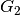
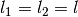
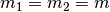
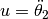
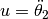
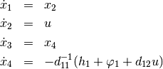
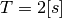
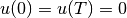
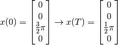

Acrobot¶
One further interesting example is that of the acrobot. The model can be
regarded as a simplified gymnast hanging on a horizontal bar with both hands.
The movements of the entire system is to be controlled only by movement of the hip.
The body of the gymnast is represented by two rods which are jointed in the joint
. The first rod is movably connected at joint  with the inertial
system, which corresponds to the encompassing of the stretching rod with the hands.
with the inertial
system, which corresponds to the encompassing of the stretching rod with the hands.
For the model, two equal-length rods with a length  are assumed with a homogeneous distribution of mass  over the entire rod length. This does not correspond to the proportions of a man, also no restrictions were placed on the mobility of the hip joint.
The following figure shows the schematic representation of the model.

Using the previously assumed model parameters and the write abbreviations

as well as the state vector ![x = [\theta_2, \dot{\theta}_2, \theta_1, \dot{\theta}_1]](../../_images/math/c248fb58cf6727bb6dc4ad322f5adf60f5a1de3a.png) one obtains
the following state representation with the virtual input 
one obtains
the following state representation with the virtual input 

Now, the trajectory of the manipulated variable for an oscillation of the gymnast should be determined. The starting point of the exercise are the two downward hanging rods. These are to be transferred into another rest position in which the two bars show vertically upward within an operating time of . At the beginning and end of the process, the input variable is to merge continuously into the rest position .
The initial and final states thus are

Source Code¶
# acrobot
# import trajectory class and necessary dependencies
from pytrajectory.trajectory import Trajectory
import numpy as np
from sympy import cos, sin
from numpy import pi
# define the function that returns the vectorfield
def f(x,u):
x1, x2, x3, x4 = x
u1, = u
m = 1.0 # masses of the rods [m1 = m2 = m]
l = 0.5 # lengths of the rods [l1 = l2 = l]
I = 1/3.0*m*l**2 # moments of inertia [I1 = I2 = I]
g = 9.81 # gravitational acceleration
lc = l/2.0
d11 = m*lc**2+m*(l**2+lc**2+2*l*lc*cos(x1))+2*I
h1 = -m*l*lc*sin(x1)*(x2*(x2+2*x4))
d12 = m*(lc**2+l*lc*cos(x1))+I
phi1 = (m*lc+m*l)*g*cos(x3)+m*lc*g*cos(x1+x3)
ff = np.array([ x2,
u1,
x4,
-1/d11*(h1+phi1+d12*u1)
])
return ff
# system state boundary values for a = 0.0 [s] and b = 2.0 [s]
xa = [ 0.0,
0.0,
3/2.0*pi,
0.0]
xb = [ 0.0,
0.0,
1/2.0*pi,
0.0]
# boundary values for the inputs
bvin = [0.0, 0.0]
# create trajectory object
T = Trajectory(f, a=0.0, b=2.0, xa=xa, xb=xb, g=bvin)
# alter some method parameters to increase performance
T.setParam('su', 10)
# run iteration
T.startIteration()
# show results
T.plot()